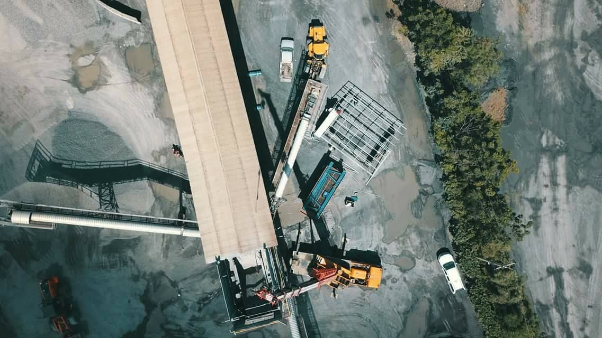
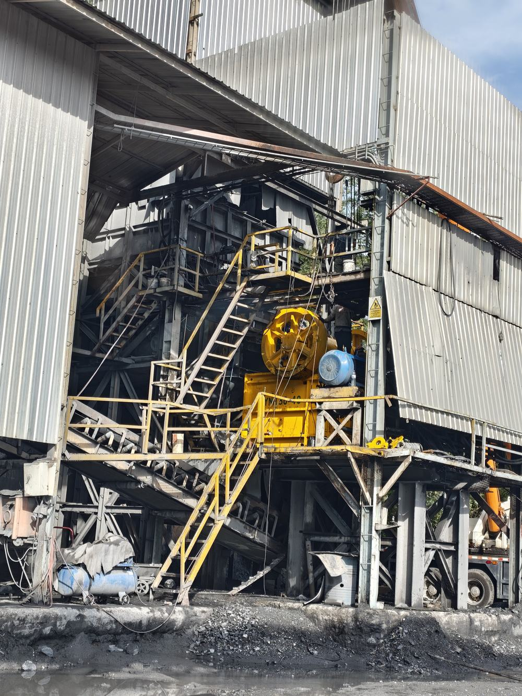
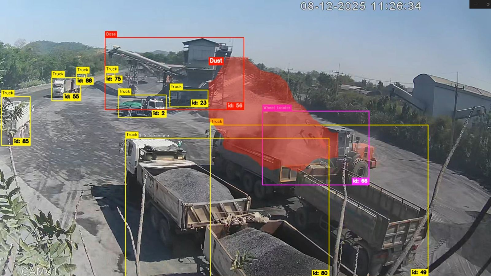
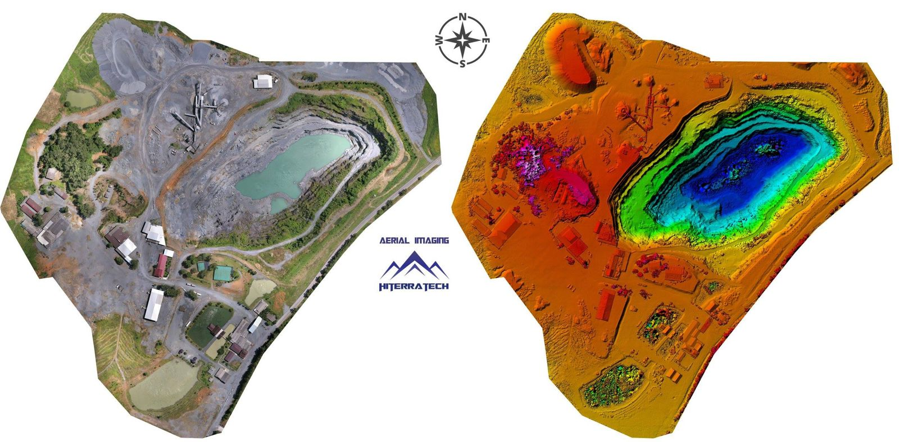

เทคโนโลยีอัจฉริยะ
สำหรับอุตสาหกรรมเหมืองแร่
Smart technology
for the mining industry
ไฮเธอราเทค ให้บริการงานวิศวกรรมสนับสนุนเครื่องจักรเหมืองแร่ และระบบ ICT ตั้งแต่เครื่องโม่ สายพาน ไปจนถึง IoT, AI และภาพถ่ายดาวเทียม ช่วยให้เหมือง โรงโม่ และโรงงานวัสดุก่อสร้าง ทำงานได้ต่อเนื่อง ปลอดภัย และเห็นข้อมูลชัดเจน HiTerratech provides engineering support for mining equipment, backed by ICT — from crushers and conveyors to IoT, AI and satellite imagery — keeping quarries, crushing plants and construction-material producers running, safer and data-driven.


เชื่อมตรรกะทางเทคนิค
เข้ากับการเติบโตของธุรกิจ
Bridging technical logic
and business growth
บริษัท ไฮเธอราเทค จำกัด ตั้งอยู่ที่จังหวัดสระบุรี ศูนย์กลางอุตสาหกรรมเหมืองหินและวัสดุก่อสร้างของประเทศไทย เราเชี่ยวชาญด้านเทคโนโลยีสารสนเทศและการสื่อสาร (ICT) และงานวิศวกรรมสำหรับอุตสาหกรรมเหมืองแร่ HiTerratech Co., Ltd. is based in Saraburi — the heart of Thailand's quarrying and construction-materials industry. We specialise in ICT and engineering services for the mining sector.
ในฐานะส่วนหนึ่งของกลุ่มบริษัท Tod Sira เราเข้าใจหน้างานจริง เพราะเราอยู่ในอุตสาหกรรมนี้เอง จึงออกแบบโซลูชันที่ใช้งานได้จริง ตั้งแต่ระดับปฏิบัติการจนถึงระดับผู้บริหาร As part of Tod Sira's group, we know the site because we operate in this industry ourselves — so we build solutions that work in practice, from the plant floor to the executive dashboard.
“Engineering the solution. Bridging the gap between concept to built.”
แก้ปัญหาอย่างเป็นระบบSystematic solve
โซลูชันครบวงจร แข็งแรง ดูแลรักษาได้ระยะยาวRobust, end-to-end solutions engineered to last.
ขยายธุรกิจได้Venture scaling
ใช้เทคโนโลยีเป็นฐานให้ธุรกิจเติบโตอย่างยั่งยืนTechnology as the foundation for sustainable growth.
ระบบอัตโนมัติAutomated infrastructure
เวิร์กโฟลว์อัตโนมัติ เชื่อมข้อมูลจากหน้างานถึงผู้บริหารAutomated workflows from operations to executive level.
โซลูชัน ICT และวิศวกรรม
สำหรับงานหนักICT & engineering
built for heavy industry
หัวใจของเราคืองานวิศวกรรมเครื่องจักรเหมือง เสริมด้วยระบบข้อมูลที่ทำให้ทุกเครื่องทำงานได้เต็มประสิทธิภาพOur core is mining-equipment engineering — supported by data systems that keep every machine performing.
วิศวกรรมสนับสนุนเครื่องจักรเหมืองMining-equipment engineering support
ติดตั้ง ปรับปรุง และซ่อมบำรุงเครื่องโม่ สายพานลำเลียง ตะแกรงคัด และโครงสร้างโรงโม่ รวมถึงจัดหาอะไหล่และอุปกรณ์Installation, upgrades and maintenance of crushers, conveyors, screens and plant structures — plus parts and equipment sourcing.
IoT และเซนเซอร์IoT & sensing
เก็บข้อมูลเครื่องจักร การผลิต และสภาพแวดล้อมแบบเรียลไทม์Real-time data from machinery, production lines and the site environment.
วิเคราะห์ภาพด้วย AIAI vision analytics
ตรวจจับฝุ่น นับรถบรรทุก และติดตามเครื่องจักรอัตโนมัติจากภาพวิดีโอAutomatic dust detection, truck counting and machinery tracking from video.
แดชบอร์ดและระบบอัตโนมัติDashboards & automation
รวมข้อมูลยอดขาย การผลิต และสต็อก เป็นรายงานอัตโนมัติสำหรับการตัดสินใจSales, production and stock data turned into automated reports for faster decisions.
บริการเสริมAlso available
โครงข่ายสื่อสารCommunications networks
ออกแบบและติดตั้งเครือข่ายไร้สาย ไฟเบอร์ และวิทยุ ครอบคลุมพื้นที่เหมืองและโรงงานWireless, fibre and radio networks covering remote quarry and plant sites.
ภาพถ่ายดาวเทียมและแผนที่Satellite imagery & mapping
ติดตามการเปลี่ยนแปลงพื้นที่เหมือง ขอบเขตการทำเหมือง และสภาพแวดล้อม จากภาพถ่ายดาวเทียมเป็นระยะTrack changes in the pit, mining boundaries and surroundings using regular satellite imagery.
จากหน้างานจริงFrom real sites
ตัวอย่างงานที่เราทำให้กับเหมืองหินและโรงโม่ในประเทศไทยExamples of what we deliver for quarries and crushing plants in Thailand.
วิศวกรรมสนับสนุนเครื่องจักรเหมืองMining-equipment engineering support
สนับสนุนงานติดตั้งและปรับปรุงเครื่องโม่ สายพานลำเลียง และโครงสร้าง ควบคู่กับระบบไฟฟ้าและระบบเก็บข้อมูลการผลิตSupporting installation and upgrades of crushers, conveyors and structures — together with the electrical and production-data systems behind them.
- พิสูจน์แล้วในโรงโม่ของกลุ่มบริษัทเราเองProven inside our own group's crushing plant
- เชื่อมเครื่องจักรเข้ากับระบบ IoTMachinery connected to IoT monitoring

ตรวจจับฝุ่นและยานพาหนะด้วย AIAI dust & vehicle detection
โมเดล AI วิเคราะห์ภาพจากกล้องหน้างาน ระบุรถบรรทุก รถตัก และกลุ่มฝุ่นแบบเรียลไทม์ พร้อมติดตามแต่ละคันด้วยหมายเลข IDAI models analyse site camera feeds to identify trucks, wheel loaders and dust plumes in real time — tracking each vehicle with its own ID.
- นับรถเข้า–ออก และรอบการขนส่งCount truck trips in and out
- แจ้งเตือนเมื่อฝุ่นเกินเกณฑ์Alerts when dust exceeds thresholds
- ข้อมูลส่งตรงเข้าแดชบอร์ดResults feed straight into dashboards

แผนที่พื้นที่เหมืองและแบบจำลองความสูงSite mapping & elevation models
ภาพแผนที่ความละเอียดสูงคู่กับแบบจำลองความสูง (DSM) ของทั้งพื้นที่เหมือง ใช้วางแผนการทำเหมืองและคำนวณปริมาตร ปัจจุบันเราต่อยอดงานนี้ด้วยภาพถ่ายดาวเทียม เพื่อติดตามพื้นที่ได้ต่อเนื่องและครอบคลุมกว่าเดิมA high-resolution site map paired with a digital surface model (DSM) for mine planning and volume calculation. We now extend this work with satellite imagery for wider, regular monitoring.
- เห็นความลึกและขั้นบันไดของบ่อเหมืองชัดเจนPit depth and benches clearly visible
- ติดตามการเปลี่ยนแปลงพื้นที่ด้วยภาพดาวเทียมChange monitoring with satellite imagery
- ข้อมูลพร้อมใช้กับงาน GIS และงานออกแบบData ready for GIS and engineering design
จากแนวคิด สู่ระบบที่ใช้งานได้จริงFrom concept to built
สำรวจSurvey
เข้าใจหน้างาน ปัญหา และเป้าหมายทางธุรกิจUnderstand the site, the pain points and the business goal.
ออกแบบDesign
วางสถาปัตยกรรมระบบและงบประมาณที่เหมาะสมArchitect the system with the right scope and budget.
ติดตั้งBuild
ติดตั้ง เชื่อมต่อ และทดสอบระบบจนพร้อมใช้งานInstall, integrate and commission until it runs.
ดูแลSupport
ดูแลต่อเนื่องและพัฒนาระบบให้เติบโตไปกับธุรกิจMaintain and evolve the system as the business grows.
ส่วนหนึ่งของกลุ่มบริษัท Tod SiraPart of Tod Sira's group
กลุ่มธุรกิจที่ครอบคลุมเทคโนโลยี เหมืองหิน และวัสดุก่อสร้างA group of ventures spanning technology, quarrying and construction materials.
HiTerratech
ICT และงานวิศวกรรมสำหรับอุตสาหกรรมเหมืองแร่ โซลูชัน ICT อัจฉริยะ และเทคโนโลยีนวัตกรรมICT and engineering for the mining industry — smart ICT solutions and innovative technology.
คุณอยู่ที่นี่You are hereศิลาชัยเจริญSila Chaicharoen
เหมืองหินและโรงโม่ ผลิตหินก่อสร้างคุณภาพQuarry and crushing plant producing construction aggregates.
slc.co.th ↗กิจธนทรัพย์Kitthanasap
ผลิตอิฐบล็อกและบล็อกประสาน รับผลิต OEM ตามสเปกงานก่อสร้างCement and cinder block manufacturing, with OEM production to spec.
ktnsblock.com ↗มีโครงการในใจ?
คุยกับเราได้เลยHave a project in mind?
Let's talk.
เล่าให้เราฟังเกี่ยวกับหน้างานและเป้าหมายของคุณ ทีมงานจะติดต่อกลับโดยเร็วTell us about your site and your goals — our team will get back to you shortly.
ส่งอีเมลถึงเราEmail us →